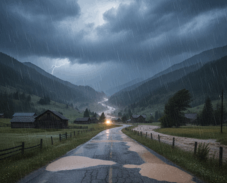
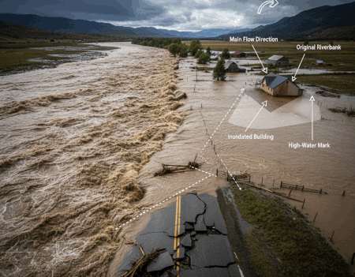
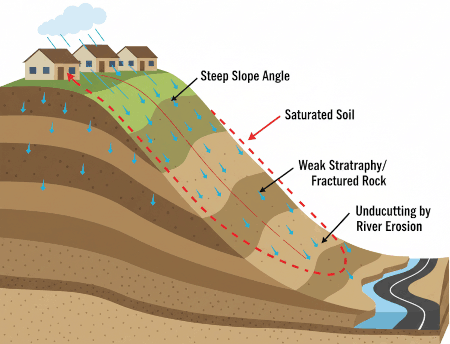
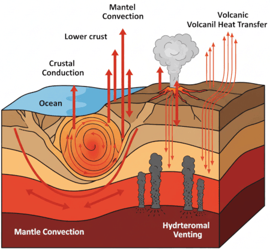

DL: CNN clasificación binaria
Predicciones de ocurrencia de precipitaciones mediante Machine Learning en la provincia de Manabí, Ecuador
Luis Rojas, Nicolás Rondal, Vanesa Yauli, Christian Mejia-Escobar

ML: Regresión Logística, SVM y Arbol de decisión
Evaluación del Aprendizaje Automático para la predicción de inundaciones
Jonathan Gallardo-Chavez, Carolina Jumbo-Olaya, Adriana Morales-Loor, Christian Mejia-Escobar

ML: Regresión Logística, SVM y Red neuronal
Estimación del Riesgo de Deslizamientos Mediante Algoritmos de Aprendizaje Automático (Vía Calacalí-Nanegalito)
Daniel Bustos, Carlos Estrada, Gerson Soria, Christian Mejia-Escobar

ML: Red neuronal artificial y Arbol de regresión
Predicción de flujo de calor mediante aprendizaje automático. Caso de estudio: Sierra Centro-Norte del Ecuador
Maritza Barrera, Esteban Armas, Santiago Alvarez, Christian Mejia-Escobar